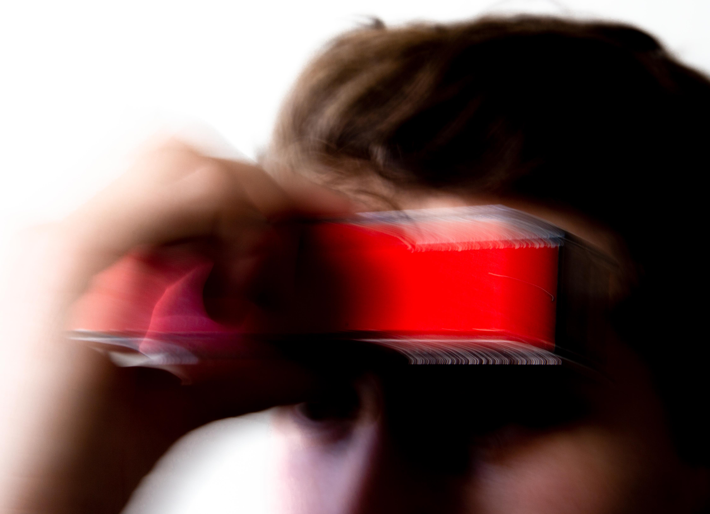

A design research project examining material culture to better understand
what objects mean, how they make us feel, and how interpretations affect the way they work. The work produced in
this lab is by nature an experiment. 2022 →
Project origins: The Acheulean Handaxe is a cordiform biface stone tool manufactured by ancient humans across Africa Europe and Asia during the Lower and Middle Pleistocene. In use for over a million and a half years, from 1.7 to 0.1 Mya without revision, the Acheulean Handaxe is the most prolific designed object in history. Despite global distribution, the function of these artifacts is not known. It is unclear if the tool was used for its blade, as an object of ceremony, to convey status or worth, or served some function not yet imagined. The razor-sharp circumference hosts an unwieldily edge, hinting that the purpose of the handaxe was more than pragmatic. The only certainty is the consistency of its form and technique of manufacture.
The Acheulean Handaxe is the origin of design; an object produced with intent through inherited cultural knowledge and technical skill. A constant presence in human lives for over a million years, this most modest object - a sharpened stone - still holds mystery. How absurd that the significance of something we carried for so long has been forgotten. Yet certitude that a renewed understanding will never be achieved makes the stone all the more alluring. Acheulean Lab pays homage to this universal human artifact that is both the archetype for successful design and a representation of the mundane.
Objects that affect or respond to their environment. The capacity for action and reaction imbues the inanimate world with a dynamism that prevents fatigue and prompts wonder.
Seeshell
How can design preserve culture in a changing world?
Objective Propose a new model for the human-ocean relationship in the town of Poole, England.
Research Literature analysis of history, culture, climate events, industry, and economic activity. Ethnographic survey and 10 interviews with local stakeholders including residents and business owners.
Concept Seeshell is a biocentric ocean health monitor that reinforces the human connection to the aquatic environment. This proposal comes in response to several large seawater contamination events along the Southeast Coast of England, and the observation that as Poole’s economy drifts away from the seafood industry an important cultural history fades from daily life. Seeshell introduces a new point of exchange with the ocean, bringing sea life above the surface to eye level interaction. By exposing the ability of shellfish to purify the oceans Seeshell creates a new value for native species if cultivated and helped to flourish. Seashell reminds residents of Poole of the significance of their local aquatic ecology, preserving their connection with the sea.
Seeshell provides habitat for local shellfish. In this image the monitoring system is supported by a pillar that hosts a colony of mussels.
An online map provides realtime and historic information about water quality, captured by the device, and accessed by the user through a QR code. The device installed on a cairn, assembled in situ from the stones of rocky beach.Species-Specific architecture: Seeshell structure with hanging chains for mussel habitat.Species-Specific architecture: Seeshell structure with layered net for oyster habitat.Species-Specific architecture: Seeshell structure with stacked stone cairn for crab habitat.
Research Explanation Poole, England: The development of this project began with an investigation into local history, and culminated with an ethnographic visit to better understand the reality of life on the southeast coast. Informal field notes were recorded, containing interactions with local residents, observations of the landscape, and the affect imparted by the landscape.
A major port since the industrial revolution, known for its cockles and scallops, the shift to a tourism-driven economy now limits opportunity for younger generations to remain in Poole. Over harvesting has left fisheries thin, and waste from surrounding agriculture and water treatment facilities has leaked into Poole harbor, contaminated water and beaches. Fishing operations have dwindled. The last remaining shellfish exported from Poole harbor are manilla clams, a species imported from Japan via France in the late 20th century. No native shellfish are produced or harvested en masse from Poole.
But traces of the history of aquaculture still glimmer in old Poole, and shape the identity of residents. Through town the lampposts are cast with gilded scallops and cockles; iconography of the pool flag and 14th century coat of arms. At low tide figures can be seen digging razor clams, scallops and cockles from sandbanks across the harbor, the docks are lined with pots and nets, and the Fisherman Cafe bustles each morning as the tight community of local sport fisherman shake their chill over hot drinks.
A better understanding of life in Poole led to the question “how can preservation of the cultural connection to native shellfish build a more sustainable economic model for seaside towns?”
Poole flag: three scallops above a dolphin. These icons represent the ocean’s historical significance to the local way of life.Poole lamp post, adorned with a dolphin, cockles, and scallops; motifs of the Poole flag.Boots on the ground: the beach in Poole harbor, littered with fragments of shells.Form Exploration: Beacons, way points, and landmarks served as a visual reference, implying to users that the tower was installed to provide site-specific information.Field notes.Field notes.Field notes.
Design Explanation Seeshell is a biocentric ocean health monitor that preserves interspecies awareness in coastal habitats. Seeshell hosts a colony of bivalves in a transparent enclosure, installed at intertidal zones. Each installation is raised a meter from the ground, supported by a tower tailored to provide habitat for local species. A pile of stones offers crabs shelter from seabirds or a textured pillar lends mussels a perch to bite. Hidden pipes draw fresh seawater into the enclosure, circulating the colony with nutrients and particulate.
The device monitors the level of local seawater pollution with the technique of valvometry: clams and mussels close their shells to provide cover from water contaminants, and by tracking movement with a computer-vision system Seeshell can estimate of changes to water quality, including presence of harmful chemicals like excess nitrogen. A network of sensors along a coastline can provide real-time and historic information about local conditions, serving as an early warning for sewage or agricultural contamination. This information is charted in an online map, and made accessible to the public through a scannable code on the enclosure. Seeshell can be used to track changing water conditions remotely, or verify in person if the water at a beach is safe for swimming, fishing, or wading.
This project was the outcome of a collaboration between the Royal College of Art and the RNLI (Royal National Lifeboat Institution), seeking new economic models for coastal communities.
Non-Graphic Interfaces
Possibilities for human computer interaction that do not rely on visual systems. Alternatives to the digital displays that have come to dominate information transfer.
Rockbell
Strike one rock with another to trigger a ring. Replace a button with a mindful act.
Caption for this image about a rock with a piece of tape on it.RB002 RB001 RB001
Sonic Thermometer
How does the practice of healthcare change when we emphasize sensory information over absolute measurements and values? This thermometer reminds the user to pay close attention to signals from their body, and that sickness and health are more than binary.
This device produces two tones, one effected by the user’s temperature. The device is tuned so a healthy temperature will align the two sound waves and a slight fever will prevent the tones from synchronizing. Place device to forehead and listen (closely) to your body.
ST001Listen to your body.  ST001
Frameworks
Systems for bilding: user-defined application.
Reoriented Strand Board
A new visual language for wood composites.
Brief How might wood composites be redesigned to shed conceptions and make them more compelling to architects, designers, and builders?
Concept RSB (Re-oriented Strand Board) is a reconsidered wood composite, embedded with an aesthetic grain structure reminiscent of natural hardwood. RSB is based on Oriented Strand Board (OSB), a wood composite used in various construction and furniture applications. Typical OSB is manufactured by compressing wood chips with adhesive under high temperature and pressure. RSB amends the surface of OSB with a clear motif. Dyed strands are scattered, aligned, and bonded into the material to form swirling patterns. RSB creates an opportunity for architects, designers, and makers to celebrate the materiality of wood composites, in the same way they might hardwood.
Insight This project began with the observation that the random disarray of particles which defines the appearance of wood composites (Oriented Strand Board, Chipboard, MDF, etc.) leads to a perception of the material as weak, ugly, and cheap. Because of the solid veneer across its surface, Plywood, another form of wood composite, does not share this reputation.
Project Objective The primary goal of this project was to validate that aesthetically pleasing grain-like patterns can be assembled and bonded with an automated process suitable for mass manufacture. Cymatic vibration was identified as a simple and flexible method to form patterns. Cymatics is an area of research that examines waves and their visual expressions through the acoustic vibration of particles (typically sand or salt) across the surface of a resonant sheet. Experiments were conducted to demonstrate the integration of cymatic patterns into composite materials, and to review the feasibility of the vibration of large particles into cymatics patterns. To create RSB a pattern was generated with dyed wood particles, then adhesive and more wood material was layered on top, and pressed until solid.
Material Exploration Cymatic experiments were conducted with 10 inch and 30 inch steel sheets (Chladni palates). Patterns were generated by exposing small wood chips (2mm) medium chips (6mm) and full scale OSB strands (2-3.5cm) to various frequencies. Sample patterns from 10 inch plates were bonded into sheets with wood adhesive to simulate how this material could be manufactured and made structural. The vibrated forms are emphasized through dye, applied to the material before vibration and bonding. 30 inch patterns were photographed and used to digitally simulate RSB in an architectural environment.
A Chladni Plate was used to generate patterns with vibration. Above: a small scale test at 10 by 10 inches.A number of patterns were produced and recorded. Represented here on a 30 by 30 inch plate.Acoustic vibration of particles.Particles forming Cymatic patterns, aligned with vibration nodes.A heatmap was generated for each captured vibration pattern. This estimate of particle density helps visualize layout of particles when exploring materials. Sample of medium (6mm) partciles aligned and bonded into board. Sample of small (2mm) partciles aligned and bonded into board. Sample of full scale (20-35mm) partciles aligned and bonded into board.
Cam Bench
A pair of triangular legs act as a fixture for furniture, providing a sturdy base to support leftovers, clutter, things seldom used, detritus, or shards thrown away. The legs secure a seat without tools or fasteners simply by rotating into place; to make building accessible to non-builders. Potential user-supplied seat materials include: cardboard boxes, fence posts, sticks and yard trimmings, books and paper, boats and oars, brooms and mops, camping equipment, car parts, broken furniture, pallets, bodies.
Inspired by a tricam, dedicated to Oblio and his arrow.
Projects for which a category has not yet been defined or where questions still search for their words.
Faceless Slip
A sheer and near weightless slip dress, made of a fully waterproof material. Stronger than steel by weight. Transparent armor, delicate impermeability. The wearer is fully presented but unaffected by outside forces.
Fishcase
Making the mundane absurd. Flexible rubber case for glasses.